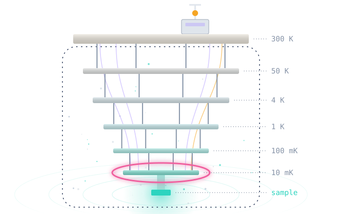
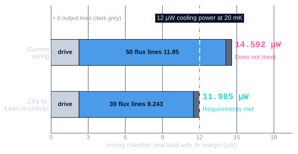
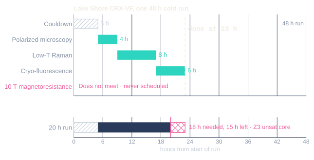
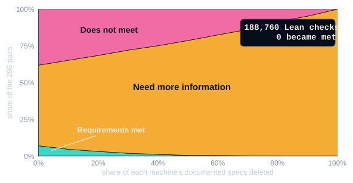

VibeCheck · The Usable Formal Methods
Hackathon · San Francisco · Nov 2026
Find the failure before the cooldown, not at 10 mK.

Hanah Rahman · Nicholas Brandenburg
hrahman12.github.io/CryoLean · github.com/hrahman12/CryoLean · generic cryostat drawn in code, no real model
/ Coupled physics · 50-qubit wiring

Bluefors LD400 mixing chamber. Z3's fix leaves 15 nW of slack.
10 ≤ 20 mK✓
base temperature
168 ≥ 124✓
wiring lines
14.592 > 12 µW✗
heat from all lines together
docs/examples/demo_b_coupled.json · paper/data/e5_heat.json, fig_heat_budget.json · line loads from Krinner et al., EPJ Quantum Technology 2019. Honest limit: with an assumed ±20 % per-line uncertainty the 39-line design passes about 51 % of the time; 95 % needs at most 33 lines (paper/data/fig_uncertainty.json).
/ Scheduling · one cold run

23 h
to finish all three accepted experiments in one cold run
400 / 400
tampered schedules where Lean agrees with an independent checker
docs/examples/demo_d_campaign_schedule.json · paper/data/e6_schedule.json (139 valid, 261 rejected) · Lean proves the schedule valid, not minimal. The 20 h case is Z3's unsat core, not a Lean proof.
/ What we don't know

Delete specs, and verdicts only drift toward Need more information.
665
of 2,832 capability entries stored as UNKNOWN, not guessed
verdict_refines
Lean theorem: new data can only resolve Need more information
paper/data/fig_incomplete_info.json (paper evaluation: 286 pairs, 30 random deletions per level) · data/cryostats/*.json · lean/CryoLean/Monotone.lean. Proofs cover our model and the sourced data, not the machine.